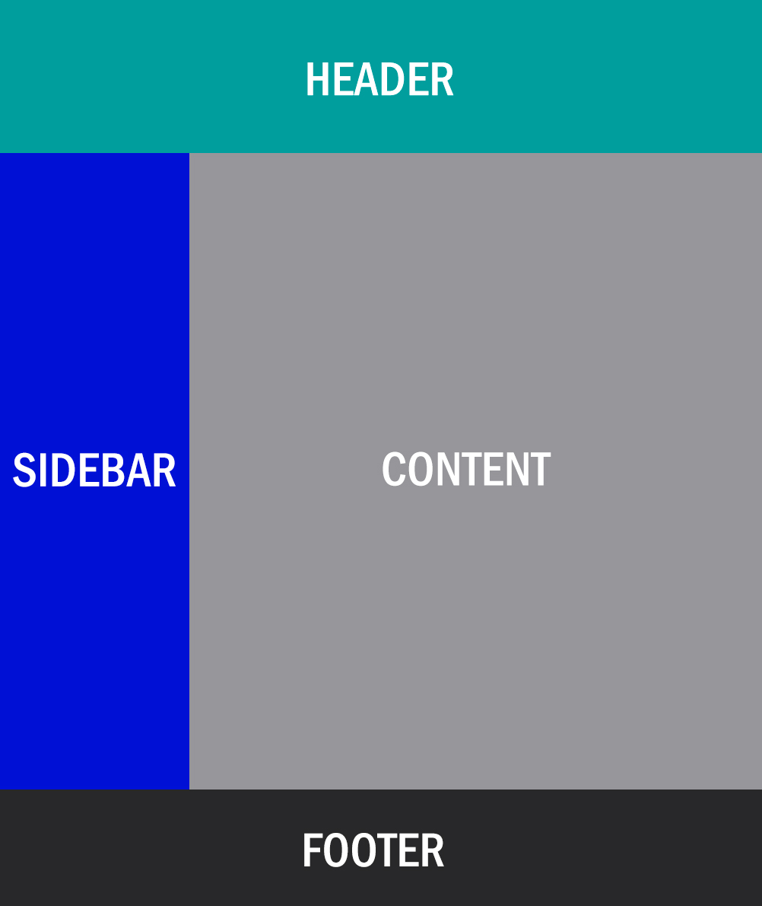
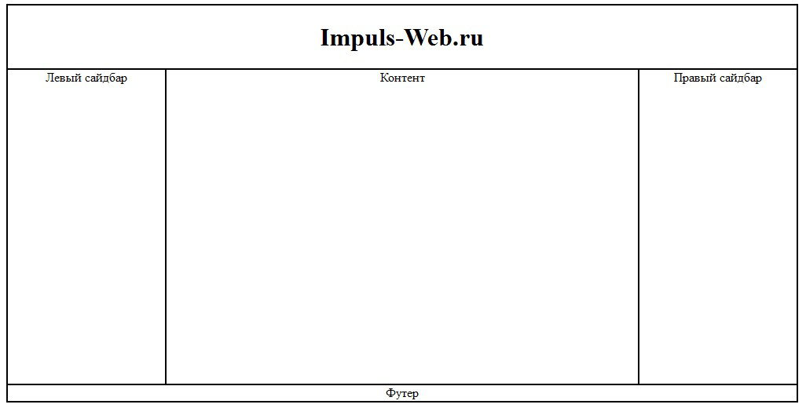

Разделы
- Что включает в себя верстка сайта
- Виды верстки сайта
- Инструменты для верстки сайта
- Сложности верстки сайта
- Тестирование верстки сайта
- Сколько стоит верстка сайта
- Ресурсы
Понятие верстки позаимствовано из издательской деятельности, где в книгах, журналах и газетах информацию располагали продуманно, особым образом. Главная цель верстки, в том числе и верстки сайта, — расположить текстовые и графические элементы так, чтобы читателю было максимально удобно и интересно усваивать информацию.
Давайте рассмотрим, из чего состоит процесс верстки сайтов.
Что включает в себя верстка сайта
Задачей верстальщика сайтов является написание кода, который трансформирует дизайн-макет (самый примитивный его вариант — набросок на бумаге) в считываемую браузером страничку, интерактивную для пользователя.
Важно знать, что в контексте создания сайтов в целом существует два вида программирования:
- Back-end — разработка функционала сайта;
- Front-end — разработка визуальной составляющей и интерактивных элементов сайта.
Верстальщик сайтов — front-end разработчик. Важнейший аспект его работы — это HTML, то есть единая система стандартов отображения элементов веб-страницы. С помощью HTML браузеры показывают страницы и контент, размещенный на них, в заданном верстальщиком порядке. Язык верстки HTML базируется на тегах, вот основные из них:
- < body > < body > — внутри этих тегов находится все содержимое страницы;
- < h1 > < /h1 > — обозначает самый главный заголовок на странице;
- < h2 > < /h2 > — заголовок второго порядка; за ним следуют < h3 > < /h3 > и < h4 > < /h4 > , дополнительные подзаголовки для лучшей навигации по тексту;
- < p > < /p > — параграф текста;
- < strong > < /strong > — жирный шрифт;
- < i > < /i > — шрифт курсивом;
- < ul > < /ul > — маркированный список;
- < ol > < /ol > — нумерованный список;
- < li > < /li > — пункты внутри списка;
- < a > < /a > — гиперссылка на другую страницу в интернете;
- < img > — изображение;
- < table > < /table > — тег для создания таблицы.
Написанием HTML-кода верстка сайта не ограничивается. Вот еще несколько процессов, которыми занимается верстальщик:
- извлечение изображений, иконок и других графических материалов из макета, их компоновка и сортировка по папкам;
- сбор желаемых шрифтов и настройка их корректного отображения;
- написание CSS-кода для проработки дизайна страницы (об этом расскажем ниже);
- подключение JS-библиотек для создания динамических элементов;
- тестирование и валидация верстки.
Давайте рассмотрим, какие существуют разновидности верстки сайта.
Виды верстки сайта
Блочная верстка
Табличная верстка
Существует два основных вида верстки — блочная и табличная. Многие выделяют адаптивную верстку как вид, но адаптивность — лишь параметр, который важно учитывать в обоих видах верстки.
Блочная верстка
Это самый актуальный и чаще всего используемый вид верстки. Его основой является тег < div > < /div >, с помощью которого можно создавать контейнеры необходимого размера и с легкостью наполнять их контентом. Тегом < div > < / div > выделяют шапку сайта, категории, текстовые элементы, логотипы, изображения, футер и прочее.
Блок < div > < /div > может содержать в себе отдельные HTML-элементы, например, иконку под тегом < img > и текст внутри тега < p > < /p >. В блочной верстке HTML идет бок о бок с языком описания внешнего вида страницы — CSS. Он помогает реализовывать дизайнерские задумки, изменяя размеры, цвета, границы и прочие свойства блоков < div > < /div >. Для удобства работы дизайнера и верстальщика, HTML- и CSS-код хранят в отдельных файлах.
Блочная верстка позволяет легко создавать аккуратный, пропорциональный и главное — адаптивный сайт, чего требуют современные пользователи. Вдобавок, блочная верстка лучше распознается поисковыми системами и облегчает попадание сайта в топ выдачи поисковых систем.
Вот схема блочной верстки, которая состоит из шапки страницы, боковой панели, основного контента и футера.

Табличная верстка
Это устаревший вид верстки, который, тем не менее, используют многие. Табличная верстка стояла у истоков современного интернета. Согласно этому методу, страницы конструируются из набора таблиц, внутри которых располагается контент. По сути, это напоминает работу с таблицами в Excel.
Ключевым в табличной верстке является тег < table > < /table >. Он определяет длину и ширину таблицы. Следующим в иерархии располагается тег < tr > < /tr >, создающий новую строку, а под ним уже располагаются теги < td > < /td >, задающие столбцы. Дальше, внутри этих тегов размещается контент.

Минус табличной верстки в том, что верстальщику необходимо создавать дополнительные пустые таблицы для того, чтобы корректно расположить элементы на странице. По этой причине, страницы сверстанные таблицами, весят больше, чем блоками, что тормозит их ранжирование в поисковых системах.
Давайте теперь рассмотрим, какие инструменты используются для верстки сайта.
Инструменты для верстки сайта
Существуют разные инструменты для верстки, которые отличаются функционалом и возможностями. Одни программы служат для работы с текстом, другие — с изображениями, третьи, гибридные, позволяют верстать и вручную при помощи кода, и в удобном блочном конструкторе. Вот основные инструменты верстальщика:
- Программы для работы с изображениями. Adobe Photoshop, Gimp, Krita и прочие приложения, позволяющие взять элементы из макета и работать с визуальным контентом.
- Редакторы кода. Notepad++, Adobe DreamViewer, CSS3 Generator, UltraEdit, SublimeText, CoffeeCup HTML Editor, Winless, Firebug, WinMerge.
- Программы для тестирования. CrossBrowserTesting, Markup Validator, IETester, Validator.w3, Dr Watson, CSS Validator.
Выбор инструментов зависит от целей и задач верстки, а также от уровня знаний и мастерства верстальщика.
Давайте узнаем, с какими проблемами можно столкнуться при верстке сайта.
Сложности верстки сайта
Понимание дизайнером процесса верстки
Отсутствие единого стандарта
Адаптивность некоторых элементов
В верстке сайта есть нюансы, которые необходимо учитывать, чтобы не запороть работу. Вот несколько из них:
- Понимание дизайнером процесса верстки. Воплощение некоторых нешаблонных задумок при помощи верстки может оказаться проблематичным. Чтобы избежать недоразумений, дизайнер должен хорошо ориентироваться в специфике верстки и уметь сопоставлять свои идеи с возможностями.
- Отсутствие единого стандарта. В браузерах Chrome, Opera, Mozilla Firefox, Explorer отображение элементов может различаться. Верстая сайт, необходимо учитывать эти различия и смотреть, как те или иные элементы будут выглядеть на разных платформах.
- Адаптивность некоторых элементов. Некоторые устройства могут не поддерживать определенные типы анимации. Использование нестандартных шрифтов также может вызвать сложности. Эти факторы необходимо учитывать, чтобы контент страницы корректно отображался у всех пользователей.
Чтобы выявить эти и другие проблемы при верстке, необходимо тестировать страницы. Давайте узнаем побольше об этом процессе.
Тестирование верстки сайта
- Проверка соответствия верстки с дизайн-макетом
- Проверка кроссбраузерности
- Просмотр страницы на разных разрешениях
- Проверка адаптивности на разных устройствах
- Выявление ошибок в JavaScript
- Валидация HTML и CSS
- Проверка скорости загрузки
- Проверка наличия аналогичных шрифтов для Windows, Mac и Linux
- Проверка интерактивности элементов
- Проверка работы ссылок
- Проверка орфографии и грамматики
Тестирование — это неотъемлемая часть верстки сайта. Чтобы убедиться в корректности верстки, необходимо пройти следующие этапы:
- Проверка соответствия верстки с дизайн-макетом. Для текста допускается расхождение до 5px, но разницу в 1-2px между блоками рекомендуется править. С этим поможет справиться инструмент Pixel Perfect.
- Проверка кроссбраузерности. Нужно убедиться, что страница корректно отображается в браузерах, которые указаны в задаче.
- Просмотр страницы на разных разрешениях. Важно проверять, как страница “ведет” себя на устройствах с большим и малым экраном. В частности, это поможет выявить ошибки с фоновой картинкой, которая должна занимать весь экран при любом разрешении. Для этого достаточно изменить масштаб, эмулируя просмотр на устройстве с большим экраном.
- Проверка адаптивности на разных устройствах. Следует проверять страницу с мобильного устройства по крайней мере в двух браузерах. Для этого достаточно уменьшить окно браузера до минимальной ширины. Также убедиться в адаптивности всех элементов страницы можно с помощью инструмента getbootstrap.com.
- Выявление ошибок в JavaScript. Для этого нужно открыть консоль браузера (ctrl+shift+i) и просмотреть код страницы. Ошибки будут выделены красным цветом.
- Валидация HTML и CSS. Для этого нужно загрузить HTML- и СSS-код в валидатор, например validator.w3.org.
- Проверка скорости загрузки. С помощью инструментов GTmetrix и PageSpeed Insights можно проверить скорость загрузки страницы и ее повысить. Это поможет “облегчить” страницу и ускорит ее индексацию поисковыми системами.
- Проверка наличия аналогичных шрифтов для Windows, Mac и Linux. Когда нестандартные шрифты не загружаются, отображается стандартный шрифт. Нужно сымитировать ситуацию незагрузки шрифта и убедиться, что со стандартным шрифтом страница смотрится нормально. Чтобы это протестировать, нужно закрыть доступ Google Fonts через файл hosts.
- Проверка интерактивности элементов. Необходимо проверить все интерактивные элементы наведением и нажатием.
- Проверка работы ссылок. Логотипы, размещенные на внутренних страницах, должны вести на главную страницу сайта. Ссылки на сторонние сайты нужно настроить так, чтобы страницы открывались в новой вкладке. Для этого в тегe < a > < /a > нужно прописать атрибут назначения ссылки: target=”_blank”.
- Проверка орфографии и грамматики. Для этого можно использовать встроенную проверку в Word, Google Docs или сервис Grammarly.
Давайте теперь узнаем, сколько нужно будет заплатить за верстку сайта.
Сколько стоит верстка сайта
Стоимость верстки зависит от объема и сложности работы, а также от того, кому вы доверите эту работу — фрилансеру или агентству. В целом, стоимость часа работы верстальщика обойдется от 300 рублей у новичков и до 1500 рублей у профессионалов.
Как правило, типичные проекты оплачиваются за весь проект, в то время как за выполнение нестандартных задач верстальщики требуют почасовую оплату. Вот приблизительные расценки на верстку от профессиональных студий в зависимости от задачи:
- Верстка сайта по макету PSD — от 15 до 40 тыс. рублей в зависимости от региона компании;
- Верстка лендинга — от 10 тыс. рублей;
- Верстка интернет-магазина — от 30 тыс. рублей;
- Внедрение адаптивной верстки на существующем сайте — от 10 тыс. рублей.
Теперь рассмотрим цены на верстку у фрилансеров:
- Верстка сайта по макету PSD — от 5 тыс. рублей;
- Верстка типичного лендинга — от 1 тыс. рублей;
- Верстка нестандартного лендинга — от 3 тыс. рублей;
- Верстка интернет-магазина — от 10 тыс. рублей;
- Внедрение адаптивной верстки на существующем сайте — от 3 тыс. рублей;
- Верстка одной страницы сайта — от 1 тыс. рублей;
- Верстка одного блока на странице — от 500 рублей;
- Добавление мелких правок — от 300 рублей;
- Добавление формы подписки, слайда фото, калькулятора — от 1 тыс. рублей.
Время верстки сайта, как и цена, зависит от типичности задачи, ее сложности и уровня профессионализма верстальщика.
Поздравляем, теперь вы знаете, что такое верстка и можете учитывать этот процесс в стратегии своего бизнеса.
Ресурсы
- В статье на Википедии веб-верстка рассматривается еще более детально.
- В статье на Википедии Ресурс Хабр дает детальную пошаговую инструкцию , как сверстать страницу.
- kwork.ru На сайте можно заказать услуги фрилансера-верстальщика по приемлемой цене.